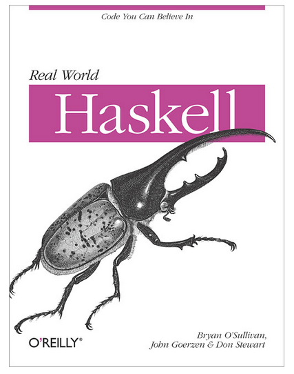

Mike Verdone
main = print "Hello, world!"
qsort :: Ord a => [a] -> [a]
qsort [] = []
qsort (x:xs) =
let pivot = x
left = [v | v <- xs, v <= pivot]
right = [v | v <- xs, v > pivot]
in (qsort left) ++ [pivot] ++ (qsort right)
Basically everything.
-- in this example, 'a' is never computed
let a = 5 + 5
b = 8 + 8
c = b + 9
in print c
-- an infinite list counting up from 1.
let a = [1..]
-- the first 100 elements from the infinite list.
let b = take 100 [1..]
-- the length of the infinite list
let c = length [1..]
-- print the length of the infinite list
print (length [1..])
-- All methods have type signatures that look
-- like this:
addNumbers :: Int -> Int -> Int
addNumbers a b = a + b
-- You can leave them out and the compiler will
-- try and derive them.
subtractNumbers a b = a - b
-- You can use classes to make functions
-- over abstract types.
multiply :: Num a => a -> a -> a
multiply a b = a * b
cast operation $ cabal install *anything*
initCurses = do
void {# call initscr #}
void {# call cbreak #}
void $ {# call mousemask #} allEvents nullPtr
hasColor <- {# call has_colors #}
when (hasColor == 1) $ do
void {# call start_color #}
void {# call use_default_colors #}
stdscr <- peek c_stdscr
void $ {# call keypad #} (Window stdscr) 1
void $ {# call meta #} (Window stdscr) 1
{# call wtimeout #} (Window stdscr) (- 1)

print and getLine. let umm = print "What's your first name?"
firstName = getLine
uhh = print "What's your last name?"
lastName = getLine
in print ("Hello " ++ firstName ++ " " ++ lastName)
bad.hs:6:30:
Couldn't match expected type `[Char]'
with actual type `IO String'
In the first argument of `(++)', namely `firstName'
In the second argument of `(++)', namely
`firstName ++ " " ++ lastName'
In the first argument of `print', namely
`("Hello " ++ firstName ++ " " ++ lastName)'
a -> IO bb is the output but it's locked inside the IO jail main = do
print "What's your first name?"
firstName <- getLine
print "What's your last name?"
lastName <- getLine
print ("Hello " ++ firstName ++ " " ++ lastName)